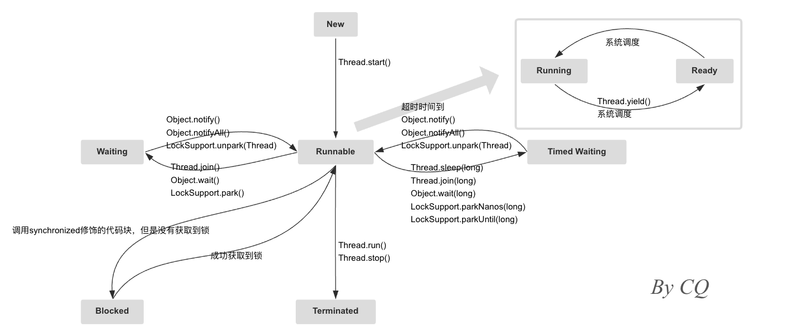
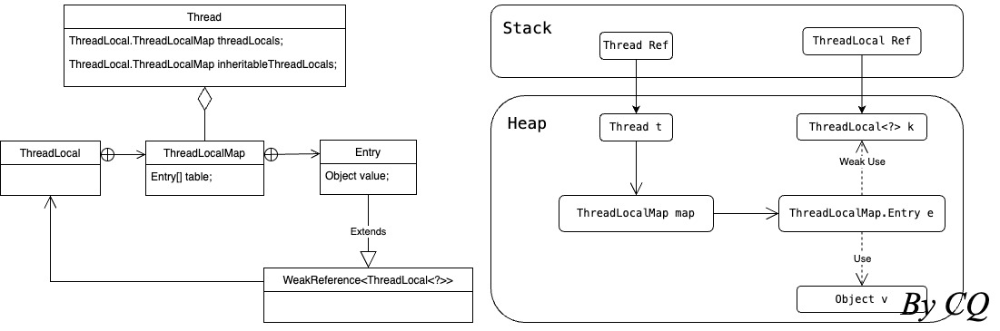

1、底层基础
由于计算机的运算速度与存储和通信子系统的速度差距太大，大量的时间都花费在磁盘 I/O、网络通信或者数据库访问上，因此不得不加入一层或多层读写速度尽可能接近 CPU 运算速度的高速缓存来作为内存与 CPU 之间的缓冲，此外，还希望通过多任务并发处理来尽可能避免对运算性能的浪费。现代操作系统（Windows、macOS、Linux）执行多任务实际就是让 CPU 对任务数量远远多于 CPU 核数的多个任务轮流交替并发执行（如果任务数量小于等于 CPU 核数就是并行执行，不存在轮流交替），而基于高速缓存的存储交互虽然很好地解决了 CPU 与内存速度之间的矛盾，但也引入了缓存一致性问题（每个 CPU 都有自己的高速缓存，但又共享同一主内存），为系统带来了更高的复杂度。
1.1 进程、线程和协程
在计算机中，一个任务称为一个进程（Process），某些进程内部还需要同时执行多个子任务，这些子任务称为线程（Thread），对于 Java 程序来说，执行多任务是指多线程并发执行。Java 线程是映射到操作系统的原生内核线程之上的，如果要阻塞或唤醒一条线程，同样需要操作系统的支持，同样会涉及到用户态到内核态的转换，这种状态转换消耗的时间甚至会比一些简单的用户代码执行的时间还要长，应当避免不必要的频繁的切入内核态。
进程和线程存在以下区别：
进程和线程是包含关系，一个进程有一个或多个线程，线程有时也被称作是轻量级的进程
进程是资源分配和保护的基本单元，线程是操作系统调度和分派的基本单元
进程往往被看作是程序或应用的代名词，是运行在它自己的地址空间内的自包容程序，具有一个独立的、完整的、私有的基本运行环境和资源集合
创建进程的开销比创建线程大，同一个进程中的线程会共享进程的资源
进程间通信比线程间通信要慢，这是因为线程间通信就是读写同一个变量，不需要进行系统调用，速度很快
进程间不会相互干扰，一个进程崩溃不会影响其他进程，但是任何一个线程的崩溃就会导致整个进程崩溃
多线程编程的复杂度比多进程更高，困难在于协调不同线程驱动的任务之间对共享资源（内存和 I/O）的使用
对于多次 I/O 操作来说，可以使用多线程来完成，但是多线程会引起资源竞争和上下文切换，导致 CPU 算力的浪费以及频繁地切入内核态，为了避免这种情况可以采用异步的方式，但是异步的方式就涉及到回调，会影响代码的可读性，因此就需要使用协程（Coroutine），协程是协作的程序，是用户态的东西，协程任务切换的上下文由用户态来保存和处理，由用户自己决定何时切换协程的上下文，这个过程不会被操作系统感知到，无需操作系统去做抢占式调度，不会产生操作系统级别的线程阻塞和上下文切换。Go 和 Ruby 都实现了协程，Java 在 19 中引入了协程，并在 21 中成为正式功能。
1.2 上下文切换
CPU 会给每个任务分配时间片，因此，即使是单核 CPU 也支持多任务并发执行代码，从而提升单核 CPU 上的程序的性能（在某个任务阻塞时，其他任务依旧可以继续执行，但如果没有任务会阻塞，那么单核 CPU 上使用并发就没有任何意义）。
上下文切换指的是内核（操作系统的核心）在 CPU 上对进程或者线程进行切换，当前任务执行一个时间片之后会切换到下一个任务，任务切换前后需要保存上一个任务的状态并加载下一个任务的状态，这种任务从保存到再加载的过程就是一次上下文切换。上下文切换的信息被保存在进程控制块（PCB，又称切换桢）中，会被一直保存在 CPU 的内存中，直到被再次使用。Java 中的线程机制是抢占式的，这表示调度机制会周期性地中断线程，将上下文切换到另一个线程，从而为每个线程都提供时间片。
由于上下文切换存在开销，因此当上下文切换过于频繁时并发执行会比串行执行更慢，尤其是原本设置为并发执行的程序在受限于资源而串行执行时，会比直接串行执行更慢，应当根据实际情况来调整程序的并发程度。为了避免频繁上下文切换而导致的 CPU 资源浪费，可以
通过合理的线程池管理来减少线程的创建和销毁，线程数并不是越多越好
使用无锁并发编程（比如 CAS），避免线程因等待锁而进入阻塞状态，进而导致的上下文切换
使用用户态线程（又称协程或虚拟线程），用户态线程的切换需要在 JVM 层面做一些成本较低的线程状态的保存和恢复，但不需要操作系统的参与，并不会导致上下文切换
合理使用锁，尽量缩小同步范围，减少线程等待时间，从而避免上下文切换
1.3 并发问题
在单线程场景下，CPU 核心的缓存只被一个线程访问，不存在一致性问题；在单核 CPU 多线程场景下，CPU 将某块内存加载到核心缓存后，不同线程访问的都是同样的缓存位置，即便发生线程切换，缓存仍然不会失效；在多核 CPU 多线程场景下，每个 CPU 都会在自己的核心缓存中保留一份共享内存的缓存数据，多线程在多个 CPU 核上并行执行，可能会出现多个线程同时写各自所在的 CPU 缓存的情况，此时各个 CPU 的缓存数据就会出现不一致
为了保证缓存一致性，CPU 会使用总线嗅探机制来检测是否有其他处理器修改了共享内存中的变量，如果有，则更新缓存，但是如果多个线程频繁地读写共享变量，就会导致大量的总线通信，从而引发总线风暴，降低系统性能，甚至可能导致系统崩溃
当某个线程正在执行的某个操作做了一部分但还没完成时该线程的 CPU 时间片就结束了，这个操作就会被打断直到该线程下一次获得 CPU 时间片才能继续执行，那么这个操作就不是原子操作，即操作的执行不满足原子性，在该操作被打断的过程中所使用的共享数据可能被其他线程修改，进而导致该操作处理的结果与预期不一致
as-if-serial 语义要求不管怎么重排序，单线程程序的执行结果都不能被改变，编译器和处理器如何优化都必须遵守 as-if-serial 语义，因此单线程的执行一定是满足有序性的（Java 中天然的有序性可以总结为：如果在本线程内观察，所有操作都是天然有序的，如果在一个线程内观察另一个线程，所有操作都是无序的），但多线程的执行则无法保证有序性
1.4 并发模型
- 并发编程需要关注两个关键问题
- 线程之间如何通信，指线程之间交换信息的机制
- 线程之间如何同步，指控制线程操作发生相对顺序的机制
- 线程间的通信有两种方式
- 消息传递，隐式的线程同步
- 共享内存，显式的线程同步
Java 并发采用的是共享内存模型，由 Java 内存模型（JMM）控制线程间的通信（不涉及操作系统内核）
JMM 是一种屏蔽了各种硬件和操作系统的访问差异的机制及规范，它在各个不同平台之上为 Java 程序呈现了一个一致的内存模型，保证了 Java 程序在各个平台下对内存访问效果一致
JMM 规定了线程间的共享变量（实例域、静态域和数组元素）存储在主内存（堆和方法区）中，每个线程自身有一个私有的工作内存（缓存、写缓冲区、寄存器等），线程的工作内存中保存该线程中使用到的变量的主内存副本拷贝，线程对变量的所有操作都必须在线程工作内存中进行，而不能直接读写主内存
JMM 规定了如何以及何时进行主内存与线程工作内存之间的交互（也就是线程间通信），这个过程中 JMM 使用了内存屏障、限制了处理器优化、提供了一系列同步机制（原语），解决了线程间通信过程中存在的多 CPU 多级缓存导致的一致性问题、CPU 时间片导致的原子性问题、以及编译器对指令重排、处理器对指令乱序执行导致的有序性问题
JMM 所使用的内存屏障是一种 CPU 指令，可以防止 CPU 及编译器对指令序列进行重排序，再加上 JMM 所提供的一系列同步机制来保证线程之间的可见性，原子性和有序性，并通过锁竞争的方式减少总线通信，一同解决了缓存一致性和总线风暴问题
JMM 中的 happens-before 原则要求如果一个操作 A happens-before 另一个操作 B，那么操作 A 的结果对操作 B 是可见的，JMM 通过 happens-before 原则确保了多线程间的可见性和有序性
1.5 同步机制
1.5.1 volatile
volatile关键字可以用来保证对变量操作的有序性和可见性，是 JVM 提供的最轻量级的同步机制。
volatile只能修饰变量，不能修饰方法和代码块volatile通过内存屏障来禁止指令重排，从而保证了代码执行的有序性volatile保证了多线程共享变量的可见性- 线程每次修改变量后，立即回写到主内存当中
- 线程每次访问该变量时总是获取主内存中的最新值
volatile读操作的开销和普通变量几乎无差别，而写操作由于需要插入内存屏障所以开销更大一点volatile不会引起上下文切换和调度，使用成本比锁低如果一个域可能会被多个任务同时访问，且这些任务中至少有一个是写入任务，那么就应该将这个域设置为
volatile或者将可以访问这个private域的方法都加锁
1.5.2 final
final关键字可以用来保证变量的可见性
写
final域时，只有在对象的final域已经被正确初始化过了之后，对象引用才会为任何线程可见读
final域时，一定会确保先读包含这个final域的对象的引用，再读该对象的final域在构造函数返回前，被构造对象的引用不能为其他线程所见（即
this引用不能溢出），那么不需要使用同步（volatile或者锁）也可以确保任意线程都能看到这个final域在构造函数中被初始化之后的值，这保证了多线程共享final变量的可见性
1.5.3 CAS
CAS 可以用来保证操作的原子性（基于硬件提供的原子操作指令）。
CAS 指
当类的当前值是
prev时，更新为next，并返回true当类的当前值不是
prev时，返回false
通过循环 CAS 实现原子操作存在以下问题
循环（和自旋一个意思）CAS 是为了提高 CAS 的成功率，同时避免线程阻塞和线程切换的开销，但并不意味 CAS 一定要配合循环一起使用，需要根据实际情况进行调整
循环时间长的话就会进入忙等待（指 CPU 繁忙却无法前进执行），一旦 CAS 进入忙等待状态一直执行不成功的话，就会造成比较大的 CPU 开销
ABA 问题，解决思路是使用版本号，或者直接改成传统的互斥同步（可能更加高效）
只能保证一个共享变量的原子操作，解决思路是将多个共享变量合并成一个共享变量
CAS 是乐观锁、锁自旋等非阻塞锁的常见实现方式，在 Java 中，JUC 包就是建立在循环 CAS 之上的
JVM 规范规定除了
long和double以外的基本数据类型的读写（单条赋值操作）均为原子操作（即为不可中断的操作），满足原子性，volatile额外保证了long和double读写的原子性自增自减这样的复合操作不是原子操作，不具有原子性
注：
乐观锁认为数据一般情况下不会有冲突，所以在提交数据更新的时候才会正式对数据的冲突与否进行检测，如果发现冲突了，则返回错误信息，让用户决定如何去做，其典型的实现方式就是 CAS
悲观锁认为数据一般情况下悲并发修改的概率比较大，需要在修改之前先加锁，
synchronized就是一种悲观锁，悲观锁会存在加锁解锁导致的性能问题
1.5.4 synchronized 锁
synchronized关键字可以用来对操作加锁，是 JVM 实现的，不可中断，非公平，可重入，通过单线程独占式执行锁住的操作以及解锁之前会先把变量同步回主存中来同时保证了有序性、原子性、可见性。
synchronized可以对方法和代码块加锁（不能用于修饰变量），有三种加锁方式对于普通方法，锁是当前实例对象
this，此时必须将对象的域设置为private，确保不能直接访问域，只能由方法来访问对于静态方法，锁是当前类的 Class 对象
对于同步代码块，锁是
synchronized括号里配置的对象
在使用
synchronized时，获取到的是哪个锁非常重要，这关系到代码逻辑是否正确以及执行是否高效无论
synchronized代码块中是否抛出异常，都会在synchronized结束处自动正确释放锁synchronized锁的实现依赖于 Java 对象的监视器 Monitor，当尝试获取对象锁时，其实是对该对象的 Monitor 进行操作，Monitor 会保证同一时间点只能有一个线程可以获取锁synchronized获取的锁是可重入的锁（能被同一个线程反复获取的锁），因此每次加锁和解锁时，需要记录这是第几次加锁和解锁，直到记录变为第 0 次时才会真正释放锁（JVM 通过给每个对象设置一个监视器和阻塞队列来实现这一过程）由于
synchronized代码块无法并发执行，且加锁和解锁也需要消耗一定的时间，故synchronized会降低程序的执行效率如果一个优先级高的线程等待一个优先级低的线程释放锁会导致优先级倒置，引起性能风险
注：
由于锁语句产生了一种互相排斥的效果（同一时间点只有一个线程可以获取锁），所以这种机制常常被称为互斥量（mutex）
公平锁是指所有希望获得锁的线程都在队列里排队，多个线程按照申请锁的顺序去获得锁，保证队列中的第一个先得到锁，不会饿死，但 CPU 唤醒线程是较大开销，吞吐量会下降很多
非公平锁是指线程先直接尝试去获取锁，此时是有可能获取到锁的，如果获取不到再进入队列排队，因此并不保证多个线程一定是按申请顺序获得锁，但 CPU 不必去唤醒所有线程，整体的吞吐量会高点，可能出现线程饿死
1.5.5 JVM 锁优化
在运行期动态编译同步块时，JIT 编译器可以借助一种被称为逃逸分析（详细参见 Java Virtual Machine 的 3.3.3 小节）的技术来判断同步块所使用的锁对象是否会被多个线程访问，如果分析证实同步块锁对象只能够被一个线程访问，那么 JIT 编译器在编译这个同步块的时候就会取消对这部分的代码块的同步，这就是锁消除，主要是防止由于开发者误加了不必要的synchronized锁而导致的性能下降，比如使用StringBuffer作为局部变量。
大部分情况下减小锁的粒度是符合常理的，但是如果在一段代码中连续地对同一个对象反复加锁解锁，甚至加锁操作出现在循环体中，则相对耗费资源，此时应当放宽加锁的范围，从而减少性能消耗，当 JIT 编译器发现这类情况就会将加锁同步的范围粗化到整个操作序列的外部，这就是锁粗化。
此外，JVM 还引入锁升级来对synchronized进行优化，降低了获得锁和释放锁带来的性能消耗，此时锁一共有四种状态：无锁、偏向锁、轻量级锁和重量级锁，为了提高获得锁和释放锁的效率，HotSpot 中，锁可以升级但不能降级（有的 JVM 可能支持锁降级）。
在大多数情况下，锁不存在多线程竞争，即总是由同一个线程多次获取，因此引入偏向锁
- 偏向锁表示锁对象当前偏向第一个访问它的线程
- 加锁和解锁不需要额外的消耗（其实根本没有同步操作），与执行非同步代码相比，性能差距很小
- 存在锁竞争时，就需要等到安全点再将偏向锁撤销为无锁或升级为轻量级锁，这会带来额外的消耗，在高并发情况下尤为严重
- 适用于只有一个线程获取锁的场景，如果确认锁通常情况下处于竞争状态，可以关闭偏向锁，偏向锁关闭后程序默认会进入轻量级锁状态
- 偏向锁在 Java 6 和 Java 7 里是默认启用的，考虑到现代应用程序中只有一个线程获取锁的场景比较少见，高并发场景下偏向锁频繁被撤销以及重新偏向会导致性能下降，且偏向锁的引入比较复杂，给 HotSpot VM 中锁相关部分与其他组件之间的交互也带了复杂性，并且阻碍了一些重大设计更改，JDK 15 中废弃了偏向锁
存在多个线程竞争偏向锁时，锁会升级为轻量级锁
- 竞争线程不会阻塞，提高了程序的响应速度
- 自旋会消耗 CPU，要避免无用的自旋
- 轻量级锁的自旋默认是开启的
- 自适应性自旋是指通常监控轻量级锁自旋等待的情况来动态调整自旋等待时间
- 适用于追求响应速度的场景
自旋获取轻量级锁失败时，锁就会膨胀为重量级锁
- 不使用自旋，不消耗 CPU
- 重量级锁的自旋默认是关闭的
- 线程阻塞，响应时间缓慢
- 重锁的重就在于加锁解锁所引起的线程阻塞和唤醒都需要操作系统内核的参与，进而导致线程状态转换的时间消耗比用户代码执行的时间还要长
- 适用于追求吞吐量的场景
2、Java 线程
2.1 线程基础
2.1.1 启动新线程
一个 Java 程序实际上是一个 JVM 进程，JVM 进程用一个主线程来执行main方法，除此之外，JVM还有负责垃圾回收的其他线程运行。在方法内部，程序员通过编写代码又可以启动其他新线程，启动新线程有泛化Thread类、实现Runnable接口以及直接使用 lambda 表达式这三种方式，三种方式的共同点在于都在run方法中定义了线程所需执行的任务，并通过调用start方法来显示地启动线程。
1 | class Main { |
Java 作为跨平台的编程语言，线程的实现是依赖于具体的操作系统的，针对比较常用的 Windows 和 Linux 来说，都是采用内核线程的方式实现的，即在 Java 程序中创建一个 Thread 时，其实是需要映射到操作系统的线程的具体实现的，其创建、调度都需要切入内核态，成本比较高。
2.1.2 线程调度
给多个并发运行的线程按照特定的机制分配 CPU 的使用权就叫做线程调度，现代操作系统基本采用时分的形式调度运行的线程
JVM 定义了抢占式的线程调度模型，如何调度线程完全由操作系统决定，程序自身无法决定线程间的执行顺序
可以通过
Thread.setPriority方法来设定线程的优先级，线程优先级就是决定线程需要多或者少分配一些处理器资源的线程属性优先级高的线程会被操作系统调度的更加频繁，但不能确保优先级高的线程一定会先执行，也不意味着优先级低的线程得不到执行，即优先级不会导致死锁
针对频繁阻塞（休眠或者 I/O 操作）的线程需要设置较高优先级，而偏重计算（需要较多 CPU 时间）的线程则设置较低优先级，确保线程不会被独占
在不同的 JVM 以及操作系统上，线程规划会存在差异，有的操作系统甚至会忽略对线程优先级的设定，因此，程序正确性不能依赖线程的优先级高低。
如果必须控制任务执行的顺序，那么最好使用同步控制，或者编写自己的协作例程（例程会按照执行的顺序在相互之间传递控制权）而不使用线程
2.1.3 线程的状态
New：新创建的线程，尚未调用
start方法Runnable：运行中的线程，正在执行
run方法中的代码Ready：属于 Runnable，但未获取到 CPU 时间片
Running：属于 Runnable，但获取到 CPU 时间片
Waiting：因为某些操作而需要等待其他线程的通知才能返回到 Runnable，会让出 CPU
Blocked：因为等待 I/O 操作或等待获取
synchronized锁之后才能返回 Runnable，会让出 CPU线程等待获取
synchronized锁才会进入 Blocked线程等待获取 JUC 的
Lock锁则会进入 Waiting
Time Waiting：可以在指定的时间内自行返回到 Runnable，会让出 CPU
Terminated：已终止的线程
注：阻塞和挂起是不同的概念，阻塞是指线程为了获得某个结果而不得不暂停执行，挂起是指显式调用某个以暂停为目的的挂起方法令线程暂停执行。
2.1.4 线程的行为
Thread.start()调用
start方法后，新线程启动启动一个线程之前最好设置该线程的名称，便于分析排查
一个线程对象只能调用一次
start方法
Thread.run()在新线程启动后会立即执行
run方法直接调用
run方法并不会执行新线程，而是在主线程中执行run方法run方法正常执行完毕或者因未捕获的异常而终止后该线程都会进入 Terminated
Thread.yield()调用
yield方法声明了当前线程已经完成了生命周期中最重要的部分，可以切换给其它线程来执行可以切换给其它线程只是对线程调度器的一个建议，而且也只是建议具有相同优先级的其它线程可以运行
Thread.join()线程调用
join方法后，其他线程都进入 Waiting，直到当前线程进入 Terminated处于 Terminated 的线程调用
join方法时会立即返回
Thread.interrupt()对阻塞中的目标线程调用
interrupt方法可以向其发出中断请求，此时目标线程的中断标志位会被置为true目标线程是否能够立即响应该中断请求，取决于目标线程的
run方法中的具体设置，有设置则对中断请求进行相应的处理，没有设置则直接忽略中断请求目标线程的
run方法可以通过检测isInterrupted方法是否返回true来判断自身是否被中断，处于 Terminated 的的线程调用isInterrupted方法会返回fasle方法一旦捕获了
InterruptedException，当前线程的中断标志位会被自动置为false，如果不希望线程就此终止，则应当通过Thread.currentThread.interrupt()来将中断标志位重置为true，否则线程在方法外部将无法得知自身是否被中断一个可能会进入阻塞操作的线程应当直接不捕获并声明会抛出
InterruptedException（更优）或捕获InterruptedException并重置中断标志位试图执行 I/O 操作和试图获取
synchronized锁的线程是不可中断的，而当任务以不可中断的方式被阻塞时，那么就会有潜在的死锁的可能可中断的锁参见 JUC 包（
tryLock），可中断的 I/O 操作参见 NIO 包
Thread.sleep()sleep方法是Thread的静态方法sleep方法不会释放锁，可以在任何地方（即便非同步区）使用sleep方法会释放 CPU 时间片，在一些底层框架中会使用Thread.sleep(0)来让当前线程主动释放一次 CPU，让其他线程可以进行一次公平的争抢
Thread.setPriority()调用
setPriority(int)方法可以设定线程的优先级优先级的范围是 1~10，默认是 5
Thread.stop()线程调用
stop方法后会进入 Terminated不建议使用
stop方法，该方法在调用后不会释放已经占有的资源，容易引发死锁除了
stop方法，还有suspend方法、resume方法都是已经过期的方法
Thread.setDaemon()在调用
start方法之前执行setDaemon (true)可以将线程设置为守护线程（也就是后台线程），最典型的应用就是 GC守护线程指为其他线程服务的线程，对于需要无限循环运行（不终止）的线程应设置为守护线程，由守护线程所创建的任何线程都自动被设置为守护线程
在 JVM 中，所有非守护线程都执行完毕后（而不关心守护线程是否结束），JVM 会自动退出，并杀死进程中所有的守护线程，守护线程并不能被优雅的关闭
守护线程不能持有任何需要关闭的资源（例如打开文件），也不能通过
finally块来执行任何逻辑，这是因为守护线程在不执行finally块的情况下就会终止其run方法
2.1.5 死锁及预防
死锁是指两个或两个以上的进程或线程在执行过程中，由于资源竞争或者由于彼此通信而造成的一种阻塞现象，若无外力作用，它们都将无法推进下去，此时称系统处于死锁状态或系统产生了死锁。
死锁发生的四个条件
- 互斥：每一时刻仅有一个线程能访问共享数据或共享资源
- 上锁及等待：每个线程都对其他线程需要的资源上锁并等待其他线程释放锁
- 无抢先机制；线程无法抢夺其他线程已经上锁的资源
- 循环等待：多个线程间循环等待其他线程释放锁
死锁一旦发生之后，没有任何机制能解除死锁，只能强制结束 JVM 进程，因此，只能通过破坏死锁发生的条件来预防
预防死锁的四个方式
- 使用允许同时使用的资源，或者增加资源数量，获取资源前检查是否可用等
- 遇到资源不可用时，就释放已经获取的资源重新来过，但这很可能会导致线程饥饿和活锁问题
- 满足抢先机制，比如设置优先级，令优先级高的可以抢占资源
- 所有线程都以同一种资源获取次序来获取资源
限定资源：并发环境中有着固定尺寸或数量的资源，例如数据库连接和固定尺寸读/写缓存等
线程饥饿：线程在很长时间内无法抢到时间片去执行就会“挨饿”
活锁：线程因无法获取全部资源而选择释放已经获取的资源，并等待能够获取全部资源从而执行，执行次序一致的线程，每个都想要起步，但发现其他线程已经在“路上”，以致很长时间甚至永远都无法启动
2.2 线程同步
多个线程同时读写可变的共享变量时，需要通过线程同步来实现线程间可靠的通信。正确地使用同步可以保证没有任何线程会看到数据处于不一致的状态中（一致性），一个已经进入同步区的线程在离开同步区之前没有其他线程可以一起进入同步区（有序性和原子性），并且进入同步区的每个线程都能看到由同一个锁保护的之前的所有修改效果（可见性）。
2.2.1 锁和临界区
对于 JVM 规范定义的单个原子操作，不需要加锁，再通过
volatile关键字来解决有序性和可见性问题后，即可实现同步对于单行非原子操作和多行原子操作（均无法保证原子性），操作原子性、有序性以及数据可见性是通过加锁和解锁实现的
加锁和解锁之间的代码块称为临界区（Critical Section），任何时候临界区最多只有一个线程（即获得锁的线程）能够执行
线程获取锁时会把线程对应的本地内存中的共享变量置为无效，使得临界区代码必须从主内存中读取共享变量
线程释放锁时会把线程中对应的本地内存中的共享变量刷新到主内存中。
2.2.2 等待/通知机制
Java程序使用synchronized解决多线程竞争问题，使用wait、notify、notifyAll、park以及unpark解决多线程协调问题。
wait方法不是一个普通的 Java 方法，而是定义在Object类的一个native方法，也就是由 JVM 的 C 代码实现的wait方法调用时，会释放线程获得的锁，wait方法返回后，线程又会重新试图获得锁，因此必须在synchronized块中才能调用wait方法调用
wait方法后，线程进入 Waiting 状态，但wait方法不会返回，直到将来某个时刻，线程从等待状态被其他线程唤醒并获得唤醒线程所释放的锁后，wait方法才会返回，然后继续执行下一条语句当某个线程调用锁对象的
wait方法后，需要其他线程调用相同的锁对象的notify方法，该wait方法才能返回，因此必须在synchronized块中才能调用notify方法notify和notifyAll的区别在于：notify只随机唤醒一个等待线程，而notifyAll会唤醒全部由相同锁对象调用wait而等待的线程，故notifyAll更安全多个线程被唤醒后，只有一个线程能够重新获得锁从而有机会被 CPU 调度进而继续执行，而其他没有竞争到锁的线程将继续等待
park和unpark也是一对用于线程等待和唤醒的方法，一般用于实现锁、信号量、线程池等高级并发组件park会使当前线程挂起，进入 Waiting 状态，具体实现会让线程进入等待队列中等待被唤醒，park方法可以不传参也可以传入一个Object类型的参数来标识线程挂起的原因，方便调试和排查问题，Unpark方法需要传入一个Thread类型的参数来标识需要唤醒的线程
2.2.3 线程安全级别
“线程安全”（thread-safe）代表是否允许多线程正确同步（即结果和预期的一样），线程安全并不是要么全有要么全无的属性，而是具有以下多种级别
不可变的（immutable）：这个类是不可变的，不需要外部同步
无条件的线程安全（unconditionally thread-safe）：这个类是可变的，但是这个类有着足够的内部同步，不需要任何外部同步即可并发使用
有条件的线程安全（conditionally thread-safe）：这个类是可变的，有部分方法需要外部同步，并需要在文档中指明
非线程安全（not thread-safe）：这个类是可变的，需要外部同步来包围这个类的每个方法调用
线程对立的（thread-hostile）：这个类是可变的，并且无法安全地被多线程并发使用，这种类要么需要进行修正，要么标注为弃用
2.2.4 线程状态传递
在一个线程中，横跨若干方法调用，需要传递的对象，称之为上下文（Context），Context 是一种状态，可以是用户身份、任务信息等。Java标准库提供了ThreadLocal用于在一个线程中传递同一个 Context，典型应用场景有用户身份信息存储、日志上下文存储、traceId 存储、数据库 Session 等。
ThreadLocal表示线程的“局部变量”，存放的是线程间互斥线程内共享的 Context 数据，相当于给每个线程都开辟了一个独立的存储空间，各个线程的ThreadLocal关联的 Context 互不干扰，可以避免同一线程内通过参数传递 Context，更加优雅通过
ThreadLocal的set方法可以将需要的 Context 关联到ThreadLocal实例当中，通过remove方法可以将 Context 从ThreadLocal实例中移除，关联到ThreadLocal中的 Context 在移除之前，所有方法都可以通过ThreadLocal的get方法随时获取到 Contextget方法其实是先获取当前线程自身的ThreadLocalMap类型的成员变量，再以ThreadLocal对象（this引用）为 key，从ThreadLocalMap中获取到 Context 数据通过
ThreadLocal设置 Context 之后一定要在finally块中调用remove方法来清除 Context，否则只要线程还存在，那么该线程的ThreadLocalMap的Entry数组中会一直保留 Context 数据，进而导致内存泄漏，具体细节见下图ThreadLocal中的 context 即便是在父子线程之间也依旧互斥，即子线程无法获取父线程的 context，如果需要在父子线程之间传递 context，可以使用InheritableThreadLocal，父线程在创建子线程时，子线程会创建父线程的InheritableThreadLocal中的 context 的副本作为自身的InheritableThreadLocal中的 context
3、JUC 包
在使用线程时，出现那些可能看起来极罕见的缺陷，是很寻常并容易发生的事，而且对于到底出了什么错，这些缺陷只能给一个很模糊的概念。在 Java 5 中引入了java.util.concurrent包，该包提供了一系列并发锁、线程安全的并发集合、原子操作的封装类以及同步器来实现简单高效健壮的并发。
3.1 并发锁
3.1.1 Lock
Lock接口提供了与synchronized关键字类似的同步功能不同于
synchronized会隐式地自动获取和释放锁，Lock接口需要显示地获取和释放锁虽然缺少了一些便捷性，但
Lock接口拥有了锁获取和释放的可操作性、可中断的获取锁以及超时获取锁等多种synchronized不具备的同步特性在
try中使用return，确保锁释放不会过早发生不要在
try块中获取锁，否则如果在获取锁时发生了异常，异常抛出时也会导致锁无故释放在
finally块中释放锁，保证在获取到锁之后，最终能够被释放Lock接口的实现基本都是聚合了一个同步器的子类来完成线程访问控制
3.1.2 ReentrantLock
ReentrantLock在功能上是synchronized的超集，在性能上至少不弱于synchronized，ReentrantLock与synchronized之间的区别在于
synchronized锁在获取时必须一直等待，没有额外的尝试机制，ReentrantLock通过tryLock方法来尝试获取锁，如果在一定的时间未获得锁，tryLock方法会返回false，此时程序可以做一些额外的处理，而不是无限等待下去synchronized可以由 JVM 来确保即使发生异常也能自动释放锁，ReentrantLock需要考虑异常，因此在获得锁之后，使用try-finally语句来执行获得锁后的操作（在finally中释放锁）synchronized是 JVM 实现的，不可中断，非公平，加锁和解锁是隐式地，ReentrantLock是 JDK 实现的，可中断，默认是非公平的，也可以是公平的，加锁和解锁是显式地，两者都是可重入的由于
synchronized是不可中断的，而ReentrantLock是可中断的，线程在tryLock失败时不会导致死锁，ReentrantLock比直接使用synchronized更安全synchronized经过 JVM 优化后，其实性能与ReentrantLock基本上持平，且从长远看，JVM 更容易对synchronized来进行优化，这是因为 JVM 可以在线程和对象中记录synchronized中锁的相关信息，而使用ReentrantLock的话，JVM 则很难得知具体哪些对象是由特定线程锁持有的synchronized是利用对象头的一部分标记位来实现的锁，而ReentrantLock的使用则需要实例化一个ReentrantLock对象，这个对象除了存储一些锁的状态外，还需要包含一些用于并发访问控制的状态信息，如持有锁的线程，等待队列等，因此ReentrantLock的内存开销会更大一些
3.1.3 ReadWriteLock
ReentrantLock保证任何时候只有一个线程可以执行临界区代码，与ReentrantLock相比，ReadWriteLock允许多个读线程同时执行临界区代码，但不允许读线程和写线程同时执行从
ReadWriteLock对象可以分别获取读锁和写锁（Lock类型），在使用时，只需根据代码逻辑来区分加写锁或者读锁即可满足以上需求，ReadWriteLock依旧是可重入锁ReadWriteLock同样需要考虑异常，因此在获得锁之后，使用try-finally语句来执行获得锁后的操作（在finally中释放锁）ReadWriteLock类适用于读多写少的场景，可以提高读取效率
3.1.4 StampedLock
与
ReadWriteLock相比，StampedLock允许在读线程获取读锁并执行的过程中，写线程获取写锁并执行从
StampedLock对象可以分别获取读锁和写锁（long类型，其实是版本号），在使用时，只需根据代码逻辑来区分加写锁或者读锁即可满足以上需求，StampedLock是不可重入锁ReadWriteLock提供的读锁是悲观锁，StampedLock提供的读锁是乐观锁，乐观锁的并发效率更高，但一旦有小概率的写入导致读取的数据不一致，检测出来后需要再读一遍StampedLock加写锁的操作与ReadWriteLock是一致的，但加读锁时，首先获取读锁（版本号）并直接读取需要的值（读取时不保证原子性），接着通过validate方法验证版本号，验证失败时从StampedLock对象获取悲观读锁，接着重新读取（加锁保证原子性）StampedLock的写锁和悲观读锁需要考虑异常，因此在获得锁之后，使用try-finally语句来执行获得锁后的操作（在finally中释放锁）StampedLock通过将读锁细分为乐观锁和悲观锁，进一步提升并发效率
3.2 同步器
锁是面向使用者的，它定义了使用者与锁交互的接口，隐藏了实现细节；同步器是面向锁的实现者的，它简化了锁的实现方式，屏蔽了同步状态管理、线程的排列、等待与唤醒等底层操作。锁和同步器很好地隔离了使用者和实现者所关注的领域，可以实现更加灵活的线程同步。
3.2.1 AQS
AbstractQueuedSynchronizer是很多 JDK 实现锁和同步器的基础类，本质是一个抽象同步队列，简称 AQS，出现在 JDK 1.5 中AQS 使用了一个
int型的volatile变量state来维护同步状态（状态的修改通过 CAS 完成），通过内置的 FIFO 双向队列来完成资源获取线程的排队工作，通过park和unpark来实现线程的等待和唤醒内置双向队列的本质是一个双向链表，选择双向链表而不是单向链表是因为双向链表更加便于从尾部反向遍历以及删除节点
同步器的设计是基于模板方法模式的，可以通过继承 AQS 并重写
tryAcquire和tryRelease方法来实现自己的同步器。自定义的同步器推荐被定义为同步组件的静态内部类，同步器本身没有实现任何同步接口
同步器可分为独占状态的同步器和共享状态的同步器，共享模式下的同步器还需实现
tryAcquireShared和tryReleaseShared方法使用独占模式同步器的主要类库有可重入锁
ReentrantLock以及读写锁ReentrantReadWriteLock中的写锁WriteLock使用共享模式同步器的主要类库有信号量
Semaphore以及倒数栅栏CountDownLatch同步队列和条件队列是 AQS 的两种不同类型的队列，同步队列主要用于实现锁机制的获取和释放，条件队列主要用于线程间的协调和通信
同步队列是 AQS 自行管理的，开发者不需要与之交互，条件队列是通过 Condition 暴露给开发者的，需要显式调用等待通知方法
每个 AQS 只有一个同步队列，但是一个 AQS 可能有多个 Condition，每个 Condition 都有自己的条件队列，因此 AQS 可能有多个条件队列
3.2.2 Condition
synchronized可以配合wait和notify来协调线程工作，当用ReentrantLock类代替synchronized时，可以使用Condition类来代替wait和notify。
Condition对象由ReentrantLock对象的newCondition方法返回得到，Condition对象可以唤醒指定线程Condition类提供await、singal、signalAll方法分别代替wait、notify、notifyAll，方法的原理和行为都是一致的await和tryLock类似的是：在等待指定时间后，如果还没有被singal或signalAll唤醒，可以自己醒来通过
ReentrantLock和Condition可以实现更加灵活的线程同步
3.2.3 CountDownLatch
用来同步一个或多个任务，强制他们等待由其他任务执行的一组操作完成。
通过参数
count来新建CountDownLatch实例，count为计数器初始值每当有一个线程达到同步点（屏障）时，调用
CountDownLatch的countDown方法使得计数器减1，调用CountDownLatch的await方法使得该线程进入Blocked状态，当计数器等于 0 时，所有被挂起的线程才继续执行CountDownLatch在计数器等于 0 并触发门闩打开后，就不能再次重复使用了，除非新建新的CountDownLatch
3.2.4 CyclicBarrier
允许多个线程在一个栅栏处等待，直到所有线程都到达栅栏之后，才会继续执行下去。
通过参数
count和Runnable实现类来新建CyclicBarrier实例，计数器初始值为0，Runnable实现类定义了屏障打开之后要执行的内容每当有一个线程达到同步点（屏障）时计数器自动加1，调用
CyclicBarrier的await方法使得该线程进入Blocked状态，当计数器达到count值时，所有线程才继续执行CyclicBarrier在计数器达到足够数量并打开屏障之后依旧能够再次重复使用
3.2.5 Phaser
与 CyclicBarrier 类似，但是支持更灵活的栅栏操作，可以动态地注册和注销参与者，以及控制各个参与者的到达和离开。
3.2.6 Semaphore
通过Semaphore可以实现多副本资源的并发控制，不同于锁只允许一个任务访问意向资源，Semaphore允许多个任务同时访问某个资源，但是限制访问的线程数量，实现了对象池的概念，避免系统资源被过度占用。
通过参数
permits和fair来新建Semaphore实例，permits代表资源数量，fair代表等待队列是否采用FIFO每当有一个线程要访问共享资源时，通过
Semaphore的acquire方法来获取资源- 如果信号量的计数器大于1，则意味着有共享资源可以使用，接着令计数器减1，然后该线程获得一份共享资源
- 如果计数器小于1，则线程进入排队队列
每当有线程要释放共享资源时，通过
Semaphore的release方法来释放资源，接着令信号量的计数器加1
3.2.7 Exchanger
当一个对象的创建代价很高昂时，通过生产者任务来负责创建对象，而需要消费这些对象的任务则是消费者任务，那么Exchanger就是用来在两个任务之间交换对象的栅栏。
3.3 同步类
3.3.1 Concurrent 集合
java.util.concurrent包提供了线程安全的并发集合类，这些并发集合与使用非线程安全的集合类完全相同，但多线程同时读写并发集合是安全的，因此可以大大简化多线程编程这些线程安全的并发集合类在遍历时不是直接在集合内容上访问的，而是先拷贝原有集合内容，遍历的是开始遍历那一刻拿到的集合拷贝，迭代器只支持不变操作，但不支持
remove等可变操作；在进行写操作时，会重新拷贝整个/部分底层数组，并在拷贝的数组（而不是原数组）上实现写操作，这个拷贝的副本在修改过程中是不可见的，只有当修改完成时，被修改的结构才会自动与主数据结构进行交换（原子性操作），这就是 COW拷贝使得集合上的可变操作的开销很大，而且即便存在拷贝，这些并发集合的
add和remove依旧是需要加锁的，这是为了避免拷贝出 N 个副本出来，并发集合类的读操作则并没有加锁，这样的好处是可以同时进行读和写，虽然读到的可能不是最新的，这里的思想是读写分离，是弱一致性/最终一致性，而不是时刻强一致性并发集合在内部自己管理同步，因此在使用并发集合时，不需要在外部将并发集合锁定，这样只会拖累性能，即始终不要使用
synchronized修饰并发集合，而对于synchronized修饰的非并发集合，则需要分情况判断是否使用synchronized修饰的非并发集合无论读操作和写操作的数量如何，都具有大致相同的性能，进行读操作或者少量的写操作时，并发集合会比synchronized修饰的非并发集合快许多，但当进行大量写操作时，需要分别测试使用并发集合或者synchronized修饰的非并发集合，以确定哪种方式更优
| interface | non-thread-safe | thread-safe |
|---|---|---|
List |
ArrayList |
CopyOnWriteArrayList |
Map |
HashMap |
ConcurrentHashMap |
Set |
HashSet / TreeSet |
CopyOnWriteArraySet |
Queue |
ArrayDeque / LinkedList |
ArrayBlockingQueue / LinkedBlockingQueue / SynchronousQueue |
Deque |
ArrayDeque / LinkedList |
LinkedBlockingDeque |
3.3.2 Atomic 类
java.util.concurrent.atomic包提供了一组原子操作的封装类（Atomic），适用于计数器、累加器等Atomic类是通过乐观锁的方式实现线程安全的，主要原理是利用了由Unsafe提供的硬件级别的原子性操作（Compare and Set）以及volatile提供的可见性，当准备更新Atomic对象时，会将旧值和新值一起提交给Unsafe的compareAndSet方法，如果旧值和当前在Atomic对象中发现的值不一致，则更新失败，会在循环内不断重试直到更新成功需要注意的是，
Atomic类对象只有在非常简单的情况下有用，这些情况通常包括只有一个需要被修改的Atomic类对象，并且这个对象独立于其他所有的对象，更加安全的做法是以更加传统的锁入手，只有在性能方面存在问题时，才尝试替换为AtomicLongAdder被用于替换AtomicLong，LongAdder会在更新失败时认为竞争激烈，因此改为更新 cells 数组来分散计数，最后的总计数则需要将 cells 数组中的值也加上，因此并发时总计数统计结果可能不够准确，但由于分散了竞争实现了较AtomicLong更好地性能，适用于并发竞争激烈，对统计结果不要求百分百准确的场景，比如点赞、阅读量的统计等
3.4 线程池
为了避免频繁创建和销毁线程，考虑复用一组线程来执行多个任务，而不是每个任务都对应一个新线程。这种能够接收大量任务并进行分发处理的一组线程就是线程池，线程池内部维护了若干个线程，没有任务时，这些线程都处于 Waiting 状态。
3.4.1 线程池类
Java标准库提供了ExecutorService接口表示线程池，ExecutorService知道如何构建恰当的上下文来执行Runnable对象，ExecutorService接口的常用实现类有：
FixedThreadPool：线程数固定的线程池CachedThreadPool：线程数根据任务动态调整的线程池，在程序执行过程中通常会创建与所需数量相同的线程，然后在它回收旧线程时停止创建新线程SingleThreadExecutor：仅单线程执行的线程池，就像是数量为 1 的FixedThreadPool，适用于希望在另一个线程中连续运行的任何长期存活的任务，或是一系列串行执行的短任务ThreadPoolExecutor：可以指定动态线程数范围，线程存活时间以及使用队列的线程池ScheduledThreadPool：用于执行需要定期反复执行的任务
3.4.2 线程池的创建
Executors类（静态工具类）中封装了很多创建各种线程池类型的静态工厂方法，但是使用这些工厂方法会存在一些弊端，比如创建出的线程池使用无界队列或者允许的最大线程数过大（Integer.MAX_VALUE），就会堆积大量请求或线程，因此不建议使用Executors，而是应该通过创建ThreadPoolExecutor实例的方式来创建线程池，规避资源耗尽的风险。
线程池的本质是一个HashSet，元素类型是Worker（Runnable的实现类），当给线程池提交任务时，如果当前线程数低于核心线程数，则增加核心线程来执行任务，当当前线程数达到核心线程数时，任务缓存在阻塞队列中排队，当队列已满时，增加非核心线程数来执行任务，当当前线程数达到最大线程数时，触发阻塞队列的饱和/拒绝策略RejectedExecutionHandler来判断如何处理新任务。
如果线程池没有自定义
RejectedExecutionHandler，Java 提供了四种内置的拒绝策略，默认会使用 AbortPolicy，会抛出RejectedExecutionException并丢弃该任务，此外，DiscardPolicy 会默默地丢弃任务而不抛出异常，一般用于日志记录等非关键场景；DiscardOldestPolicy 会尝试将任务队列中最早的任务删除，然后再尝试提交新任务，一般用于实时性要求较高的场景；CallerRunsPolicy 会将任务回退给调用线程（不会抛出异常），调用线程会尝试执行任务，这种处理会降低任务提交速度，适用于任务提交者能够承受任务执行压力但希望有一种缓冲机制的情况如果线程池使用无界队列
LinkedBlockingQueue，其最大长度为Integer.MAX_VALUE，容易在队列中堆积大量请求；如果线程池使用不存储元素的队列SynchronousQueue，则相当于队列永远是满的；一般使用有界队列ArrayBlockingQueue并配合RejectedExecutionHandler一起线程池中线程的数量并不是越多越好，具体的数量需要评估每个任务的处理时间以及当前计算机的处理器能力和数量，使用的线程过少，无法发挥处理器的性能；使用的线程过多，将会增加系统的无故开销（内核线程资源，内存资源，上下文切换等），起到相反的作用
一般在刚上线时先根据公式（CPU 密集型应用线程数设为 N+1，I/O 密集型应用线程数设为 2N+1，N 为 CPU 核数）设置一个大致初始线程数，然后再通过压测来不断调整至合理数值，确保合理使用系统资源，达成业务需求指标（时延、吞吐量等）
不能把大量不同类型的请求提交给同一个线程池，否则当某种类型请求流量过高时，线程池流量过载，进而导致其他类型的请求也都全部崩溃
对 I/O 等阻塞操作的优化优先于对线程池的优化
3.4.3 线程池的操作
JUC 尽可能避免对Thread对象的直接操作，而是尽量通过线程池来执行所有操作
线程池的
submit方法用于提交要执行的任务，该方法的入参是一个Runnable/Callable<T>接口的实现类，并返回一个Future<?>/Future<T>，通过调用该返回值的cancel方法，它就会拥有在该线程上调用interrupt以停止这个线程的权限线程池的
shutdown、shutdownNow方法都可以用于程序结束时关闭线程池，shutdown会等待线程池中正在执行以及队列中的任务先完成，然后再关闭，shutdownNow会立即停止正在执行的任务（发送一个interrupt调用给它启动的所有线程）当
corePoolSize为零时，池内线程在执行完任务后会在达到keepAliveTime后被 JVM 回收，当corePoolSize大于零时，应该在destory方法中调用线程池的shutdown方法，否则池内线程将不会被回收，并产生内存泄漏问题awaitTermination方法通常放在shutdown方法后面用来判断固定时间后线程池是否关闭针对
ScheduledThreadPool类线程池，通过schedule方法来提交只执行一次的任务，通过scheduleAtFixedRate或scheduleWithFixedDelay方法来提交需要多次反复执行的任务，这三个方法均可设置任务的延迟，scheduleAtFixedRate和scheduleWithFixedDelay均可设置任务执行次数FixedRate和FixedDelay的区别在于：FixedRate是指任务总是以固定时间间隔触发，不管任务执行多长时间；FixedDelay是指上一次任务执行完毕后，等待固定的时间间隔，再执行下一次任务在
FixedRate模式下，假设每秒触发，如果某次任务执行时间超过1秒，后续任务执行可能会延迟开始，但不会并发执行如果任务抛出了异常，将禁止后续任务的执行
3.4.4 任务执行结果
用线程池执行任务时，提交的任务只需实现Runnable接口即可，可如果需要获取任务执行的返回值或异常，则需要向ExecutorService.submit方法传入一个实现了Callable接口的任务，submit方法会返回一个Future类型的实例（代表一个未来能获取结果的对象）。与Runnable接口不同的是，Callable接口所定义的任务有返回值并且可以返回指定类型的结果，Callable接口所定义的任务可以抛出受检异常，Callable接口不可以应用于Thread类。
返回的
Future类型的泛型与Callable接口的泛型一致，从而达到指定类型的目的Future.get()用于获取指定类型的任务结果实例result或者任务执行的异常，可能会阻塞，需要等待Future.get(long timeout, TimeUnit unit)只等待指定的时间Future.cancel(boolean mayInterruptIfRunning)用于取消当前任务Future.isDone()用于判断任务是否已完成
注：
Java 主线程和子线程是并发执行的独立单元，因此主线程无法直接捕获子线程的异常，因此只能通过
Future来间接获取子线程所执行任务的异常，也可以给子线程设置UncaughtExceptionHandler来处理未捕获的子线程中的异常每个 Java 都是相对独立的执行单元，拥有独立的执行上下文，一个线程中的异常只会影响该线程本身，其他线程均不受影响，因此 JVM 并不会因为一个线程的异常就退出 JVM 进程
3.4.5 任务拆解
Java 7 开始引入了Fork/Join线程池：基于“分治”思想将大任务分解成小任务，利用多核 CPU 并行执行，适用于任务之间没有依赖的计算密集型任务
Fork/Join线程池由ForkJoinPool.commonPool()方法创建得到，线程池的invoke方法用于提交要执行的任务，任务类必须继承自RecursiveTask或RecursiveAction类ForkJoinPool是基于工作窃取算法实现的线程池，池中每个线程都有自己的工作队列，用于存储待执行的任务，当一个线程执行完自己的任务之后，会从其他线程的工作队列中窃取任务执行，以此来实现任务的动态均衡和线程的最大利用率ForkJoinPool中的任务通常是一些可以分割成多个独立子任务的任务（例如快速排序），这些独立子任务由不同的线程来执行，这个过程中ForkJoinPool会自动管理任务的执行、分割和合并，实现任务的最优化执行与普通线程池中的工作线程不同，
ForkJoinPool中的工作线程会自动地创建、销毁以及数量的动态调整，线程池的管理成本很低，而ExecutorService则需要手动定义线程池相关的各种参数控制
3.4.6 任务编排
Java 8 开始引入CompletableFuture，CompletableFuture提供了一系列简单明了的链式调用来实现异步任务编排以及事件驱动编程（具体使用参考）
CompletableFuture可以传入一个实现了Supplier接口的回调对象，当异步任务完成或者发生异常时，能够自动调用回调对象的回调方法，当主线程设置好回调之后，不需再关心异步任务的执行，此时不再需要使用会导致主线程被迫等待的Future.get方法或轮询Future.isDone方法CompletableFuture底层实现主要涉及到了Completion链式异步处理、事件驱动机制、ForkJoinPool线程池、CountDownLatch控制计算状态、CompletionException捕获异常等CompletableFuture底层使用ForkJoinPool而不是ExecutorService是因为它的执行模型和任务分割与ForkJoinPool的理念更加匹配
4、Java 协程/虚拟线程
4.1 问题与解决
CompletableFuture便于编排存在先后依赖关系的异步任务，一定程序上提高了 CPU 利用率，但是当任务请求数大于服务最大线程数且当前线程都阻塞时，新的任务必须等待直到有新的空闲线程，这个等待过程中 CPU 依旧是空闲的。
考虑到这种突发流量可能并不是长期持续存在的情况，且创建太多线程会消耗大量资源（线程的上下文切换，占据大量内存等）
常见的方案是升配扩容（垂直扩展指升级机器配置，水平扩展指增加服务节点），缺点是会增加成本，同时有些场景下扩容并不一定能解决问题
异步/响应式编程使用事件驱动即可通过少量线程实现高吞吐的请求处理，但与目前的任务请求和线程一对一的模型差异较大，存在兼容性问题
JDK21 提供了与
Thread完全一致的抽象VirtualThread，将平台线程的阻塞变为虚拟线程的阻塞，使得平台线程可以继续处理新的任务请求，减少了线程上下文切换，提高了 CPU 利用率
4.2 虚拟线程
平台线程
对应
Thread实例，Java 作为跨平台的编程语言，平台线程的实现是依赖于具体的操作系统的，可以看作是 Java 对操作系统内核线程的包装操作系统内核线程由操作系统管理，是操作系统调度的基本单元，因此平台线程的创建、调度都需要切入内核态，成本比较高
可以在底层操作系统线程上运行 Java 代码，并在代码所定义的任务的整个生命周期内独占操作系统线程
和操作系统线程是一对一的映射关系，数量受限于操作系统线程的数量
虚拟线程
虚拟线程就是协程，在 JDK 19 中只是一个预览 API，默认是禁用的，但在 JDK 21 中成为正式功能
虚拟线程对应
VirtualThread实例，由 JVM 管理，不与特定的操作系统线程或平台线程相绑定，是作为普通 Java 对象存储在 RAM 中虚拟线程总是守护线程（意味着 JVM 不会等待虚拟线程执行完成后才退出）且总是具有不可更改的 normal 的优先级，即使调用
setDaemon(false)也不能将虚拟线程更改为非守护线程，调用setPriority也不能更改虚拟线程的优先级，也不支持stop()、suspend()、resume()方法，这三个方法在调用时会抛出UnsupportedOperationExceptionJava 代码所定义的任务被提交给虚拟线程，但虚拟线程不能独立执行任务，而是需要将虚拟线程挂载到一个平台线程，在平台线程上运行 Java 代码
真正负责执行虚拟线程中任务的平台线程就称为虚拟线程的载体线程，代码所定义的任务的整个生命周期内不独占载体线程，可以多个虚拟线程共享同一个载体线程
当任务需要阻塞或挂起时，虚拟线程会从平台线程上卸载，释放平台线程资源以供其他任务使用，高并发场景下可以有效利用系统资源，当任务解除阻塞继续执行时，虚拟线程重新装载到平台线程上，并从阻塞点继续执行
虚拟线程不能使用 synchronized（依赖于操作系统级别的同步原语），这会使得阻塞期间的虚拟线程无法从平台线程上卸载，无法释放平台线程资源，失去虚拟线程的优势
挂载和装载的过程在 Java 代码不可见，会产生一个虚拟线程始终在同一个载体线程上运行的假象，但在同一虚拟线程上多次调用的代码实际每次可能使用不同的载体线程，JDK 使用了 FIFO 模式的
ForkJoinPool作为虚拟线程的调度器可以通过轻量级的任务队列来调度多个虚拟线程，避免了平台线程间基于内核的上下文切换开销，且虚拟线程的创建和销毁的开销很低，数量不受限制，可以比平台线程的数量大得多，无需池化（池是用于复用昂贵的资源，还会削弱虚拟线程的灵活调度优势，管理复杂），也不建议使用 ThreadLocal（虚拟线程数量巨大，ThreadLocal 使用不当容易内存泄漏）
5、分布式锁
参见 Distributed System 的 5.1 小节和 Redis 的 4.3 小节
6、参考资料
- 《Java并发编程的艺术》
- 《Effective Java (Third Edition)》
- 《Thinking in Java (Fourth Edition)》
- https://www.liaoxuefeng.com/wiki/1252599548343744/1255943750561472
- https://juejin.cn/post/6854573217244413966
- http://www.cyc2018.xyz/Java/Java%20并发.html
- https://mp.weixin.qq.com/s/vdLXhZdWyxc6K-D3Aj03LA